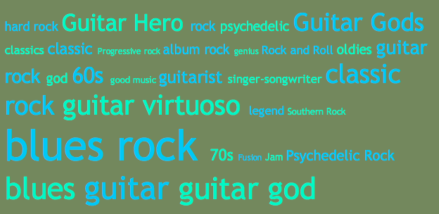

Tagomendations - making recommendations transparent
If you go to one of the many social music sites out there and get 'similar artists' recommendations for Jimi Hendrix. You are likely to get a list such as the one you get from Last.fm:

There's no arguing that this is a good list - but it is also a rather diverse list. Eric Clapton's blues guitar is quite different from the psychedelic acid rock of the Doors. I'd really like to know a bit more about the recommendations - in particular I'd like to know why a particular artist was recommended. This can help me gain trust in the recommender as well as help direct me to artists based on criteria that are most relevant to me. Unfortunately, most recommenders are based strictly on consumption habits, so the only recommendation explanation available is the Amazonian "People who listened to Jimi Hendrix also listened to Eric Clapton and the Doors" - which is not too helpful for me.
We want to make recommendations transparent - so that you can ask 'why did you recommend this' and get a useful answer beyond the typical 'people who bought X also bought Y'. In order to generate transparent recommendations you need to have some understanding of the content - there has to be some way of knowing that Hendix tracks typically contain distorted guitar, for example. Companies like Pandora, with their music genome project have spent years analyzing to hundreds of thousands of tracks, assigning 400+ attributes to each track. This lets Pandora give those great explanation that makes them so popular with their users:
Pandora can generate these excellent explanations because they've taken the time (and spent lots of money) to listen to and extensively label all of their music. Most companies won't have the time, money or patience to do this - and even Pandora that is committed to this approach, can't keep up with the volume of new music that is generated every year. Luckily, there are other sources of content description that we can use to generate recommendations.
One such source are social tags. Social tags have been all of the rage in the web 2.0 world. Sites like del.icio.us, Flickr and Last.fm demonstrate how the such tags can be extremely useful for searching and organizing content, especially non-text content. Social tags can also be used to give us good transparent recommendations.
Here are the most frequent social tags applied to Jimi Hendrix at Last.fm:
Now tags like 'rock' and 'blues' occur rather frequently for many artists, so are less descriptive than tags like 'guitar god' which occur infrequently across artists. So we can take this into account and generate a list of the most distinctive tags for Jimi Hendrix. These are tags that occur rarely across the entire set of artists, but occur frequently for Hendrix. (This is the classic TF-IDF term weighting technique). Here are the distinctive tags for Hendrix:

The less descriptive tags such as 'rock' have fallen off the list while extremely targeted tags like 'jimi hendix' and 'acid rock' have risen to the top. This list is a much better description of Hendrix than the 'Frequent Tags' list and can serve as the basis for our transparent recommendations.
With these distinctive tags, we can generate recommendations based upon the cosine distance
of these distinctive tags to the distinctive tag sets of other
artists. This type of recommendation, based upon the similarity of
distinctive tags, gives us surprisingly good results. My
colleague, and resident neologist, Steve,
coined the term 'tagomendations' for recommendations based on the
social tags. Here are the tagomendations for Jimi Hendrix (ordered
by artist popularity):

Interestingly (and surprisingly) our tagomendations compared favorably to recommendations generated with the more traditional collaborative filtering techniques when we evaluated them in a survey. And of course, with these tagomendations based upoon distinctive tags we can now explain why a recommendation was made, based upon how the distinctive tags for two artists overlap.
For instance, for the Clapton recommedation, we can look at how the distinctive tags for Clapton and Hendrix overlap:

Clearly if you like Hendrix because of his blues guitar playing, you might want to give Clapton a listen. Compare this to the overlapping tags of The Door and Hendrix:

This is quite a different vibe - with the focus on psychedelia of the 60s.
These tag clouds showing how the distinctive tags for recommended artists overlap with the seed artist give me the opportunity to explore the recommendations based on my taste. If I like Hendrix because I am a fan of face-melting guitar, I will quickly find artists, like Joe Satriani, Gary Moore, or Steve Vai - but if the reason I like Hendrix is because of the 60s, psychedelic vibe, I may find Jefferson Airplane or Steppenwolf more to my taste.
That's it in a nutshell - how we are using social tags to generate transparent, explainable recommendations. And by the way, to do the heavy lifting for our Tagomendations we are using the text search engine called Minion, developed by the Advanced Search Technology group here at Sun Labs. Minion is a high quality, highly configurable search engine that is perfect for doing these types of experiments. Look for Minion, It's coming to an open source repository near you very soon.
Likewise, we hope to release our web-based music explorer that can generate transparent tagomendations soon. Here's a little bit of what it looks like:


This looks really excellent, Paul. I'll bet a lot of people will want to try this out. Cheers!
Posted by Jon on December 21, 2007 at 09:55 AM EST #
What a great concept! I believe that there is room for improvement in current recommendation technologies and that collaborative filtering, combined with social tags and acoustic recognition may be the holy grail...
What the industry really needs though is a way for major and indie artists to easily submit their music to all the leading recommendation and metadata engines in one swoop....similar to the concept of what reverbnation is doing. In other words, one-stop shopping for content creators to thoroughly "define" their art as part of the official release phase and then use 1 main repository or clearinghouse to submit to everyone else's back end...
todd
Posted by Todd Beals on December 22, 2007 at 11:26 AM EST #